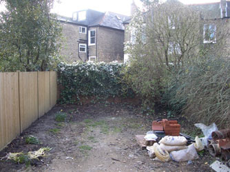
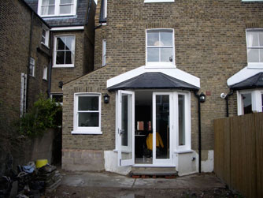
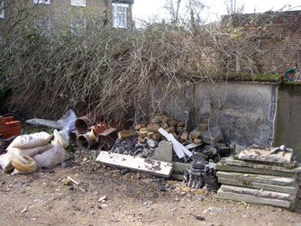
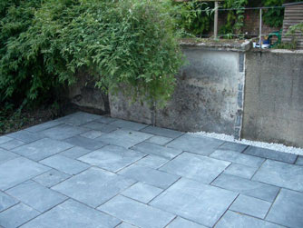
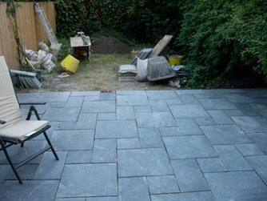
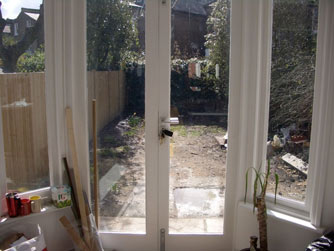

A tiny space - full of building rubble and very limited access. The client wanted a low-maintenance space. A slate patio is laid giving a trouble-free space for entertainment, Artificial grass is laid, providing a green surface which requires NO mowing! Metal water troughs are filled with hardy dought-tolerant plants and bamboos provide a screen at the end of the garden.



building rubble is removed

blue/grey slate provides a chic surface

a new smart useable space for outdoor entertaining ...

... whereas before the client didn't even want to go into the garden